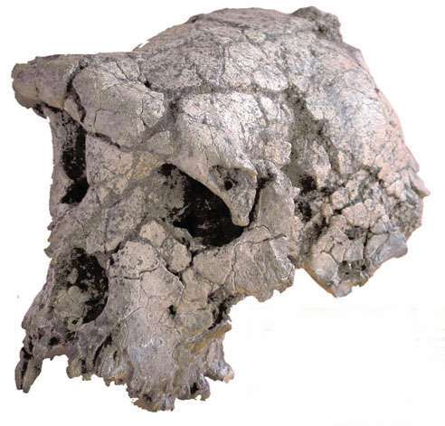

TM 266-01-060-1 (Toumaï)

TM 266-01-060-1, „Toumaï", Sahelanthropus tchadensis
Discovered by Ahounta Djimdoumalbaye in 2001 in Chad, in the southern Sahara desert (Brunet et al. 2002, Wood 2002). Based on faunal studies, it is estimated to be between 6 and 7 million years old, and more likely in the older part of that range. This is a mostly complete cranium with a small brain (between 320 and 380 cc) comparable in size to that of chimpanzees.Noch keine Knochen unter dem Schädel wurden entdeckt, daher ist nicht bekannt, ob Toumai zweibeinig war oder nicht. Brunet et al. sagen, dass es eine nicht unvernünftige Schlussfolgerung wäre, anzunehmen, es sei ein gewohnter Zweibeiner gewesen, da es Merkmale mit anderen Hominiden teilt, die als zweibeinig bekannt sind. Andere Wissenschaftler haben darauf hingewiesen, dass das Foramen magnum (das Loch, durch das das Rückenmark den Schädel verlässt) von Toumai im hinteren Teil des Schädels positioniert ist wie bei Affen, was darauf hindeutet, dass der Schädel nach vorne gehalten wurde und nicht auf einem aufrechten Körper balanciert war.
Brunet et al. betrachten Toumai als Hominide, das heißt, auf unserer Seite der Aufspaltung zwischen Schimpansen und Menschen und daher uns näher verwandt als Schimpansen. Dies ist keineswegs sicher. Einige Wissenschaftler halten es für wahrscheinlich; andere haben vorgeschlagen, dass es vor dem Punkt stammen könnte, an dem sich die Hominiden- und Schimpansen-Stämme getrennt haben, während Brigitte Senut (eine der Entdeckerinnen von Orrorin tugenensis, "Mann des Millenniums") vorgeschlagen hat, dass es sich um einen frühen Gorilla handeln könnte. Ich denke, es ist unmöglich zu wissen, wie Toumai mit uns verwandt ist, bis andere Fossilien aus derselben Zeitperiode gefunden werden können.
Was auch immer es ist, alle Wissenschaftler waren sich mit den Entdeckern darin einig, dass Toumai ein Fund von großer Bedeutung ist.
Referenzen
Brunet M., Guy F., Pilbeam D., Mackay H.T., Likius A., Djimboumalbaye A. et al. (2002): Ein neues Hominid aus dem oberen Miozän von Tschad, Zentralafrika. Nature, 418:145-51.
Brunet M., Guy F., Pilbeam D., Lieberman D.E., Likius A., Mackaye H.T. et al. (2005): Neues Material des frühesten Hominiden aus dem Oberen Miozän von Tschad. Nature, 434:752-5.
Wood B. (2002): Hominid-Erkenntnisse aus Tschad. Nature, 418:133-5.
Zollikofer C.P.E., Ponce de León M.S., Lieberman D.E., Guy F., Pilbeam D., Likius A. et al. (2005): Virtuelle Schädelrekonstruktion von Sahelanthropus tchadensis. Nature, 434:755-9.
Links
Schädel-Fossil öffnet Fenster in frühe Phase der menschlichen Ursprünge, by D. L. Parsell (National Geographic News)Die Toumaï-Website (Centre National de la Recherche Scientifique)
Vater von uns allen?, von Michael Lemonick und Andrea Dorfman (Time)
Treffen Sie das älteste Mitglied der menschlichen Familie, von Kate Wong (Scientific American)
Neue vorläufige Antwort auf „Ape-Man" von Carl Wieland (eine kreationistische Antwort)
Ist der alte Schädel mehr Affe als Mensch? (CNN)
Diese Seite ist Teil der FAQ zu fossilen Menschenaffen im TalkOrigins-Archiv.
Startseite |
Arten |
Fossilien |
Kreationismus |
Lektüre |
Referenzen
Illustrationen |
Neuigkeiten |
Feedback |
Suche |
Links |
Fiktion
http://www.talkorigins.org/faqs/homs/toumai.html, 31.07.2002
Copyright © Jim Foley
|| E-Mail mir